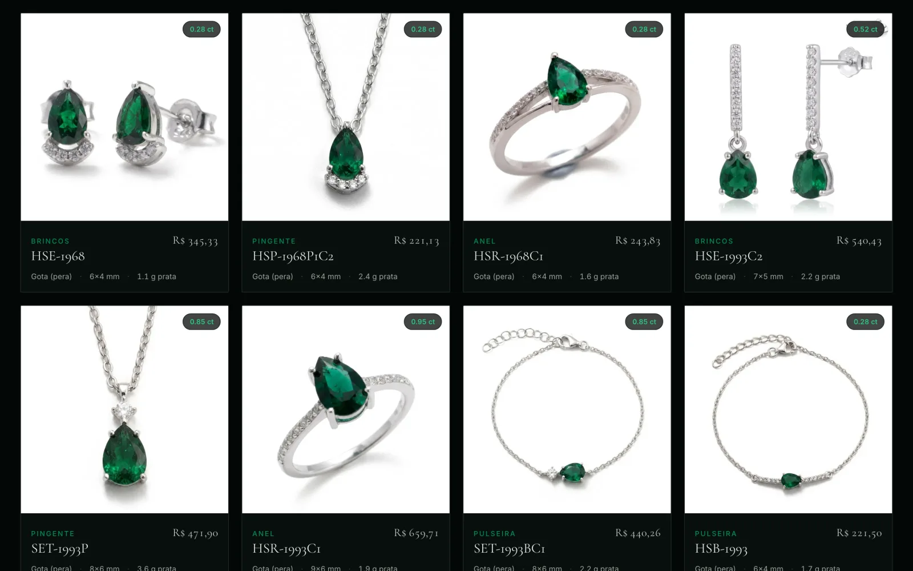
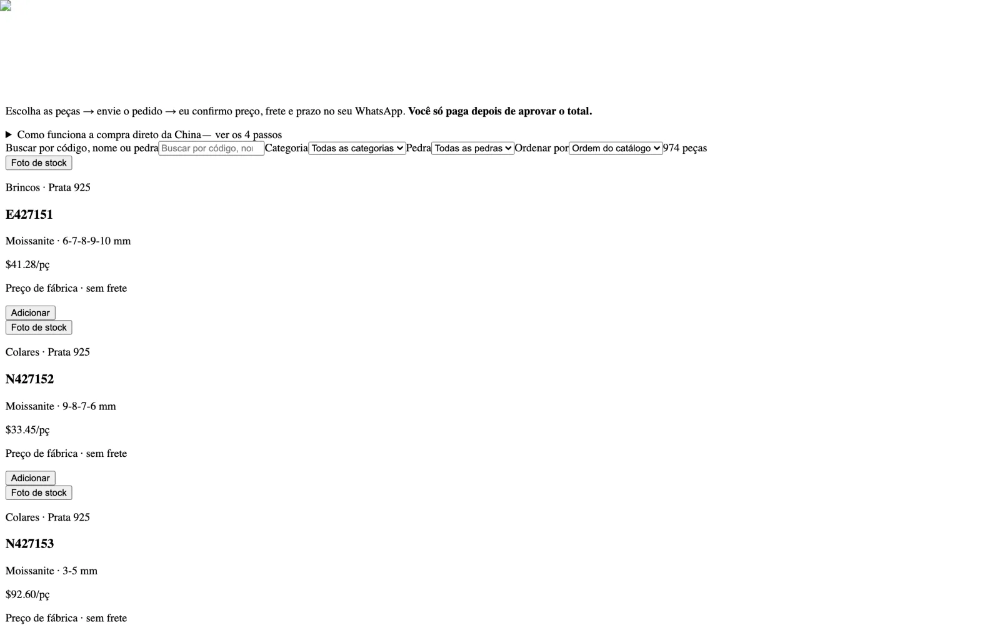

Catálogos de importação para lojistas
A lojista escolhe a peça de fábrica e vê quanto paga e quando

O que muda no seu negócio
A planilha ilegível da fábrica vira vitrine em horas, não em dias. Entrou cotação nova, o catálogo é regerado.
Quem intermedeia para de perder cliente para a fábrica: o nome do fornecedor nunca chega ao navegador, e existe teste automático que barra a publicação se chegar.
O problema
Quem importa joia não sabe o preço real, descobre tarde que paga trinta por cento de sinal antes da produção e, quando descobre quem é a fábrica, passa a comprar direto.
Do outro lado, a cotação chega como planilha com fotos embutidas e legenda queimada em cima da peça. Transformar aquilo em algo que um comprador consiga decidir olhando é trabalho manual, repetido a cada cotação.
O que o sistema faz
- Lê a planilha ou o PDF da fábrica e extrai fotos, peso, medidas e preço de cada linha.
- Limpa a legenda queimada na foto e gera a versão com a pedra do cliente.
- Separa na tela o que a fábrica cotou do que é estimativa, peça por peça.
- Catálogo privado por link: vazou, dá para saber de quem e revogar só aquele.
- Pedido com preço de fábrica, taxa de intermediação destacada e sinal explícito.
- Folhas de impressão diferentes para o cliente e para a fábrica.
- Adicionar fábrica nova é escrever um perfil, não um programa.
Telas


O que prova a engenharia
- 974
- itens no catálogo de importação
- 62
- testes cobrindo preço, anonimato do fornecedor e leitura de cotação
- 3
- conferências contra vazamento de fornecedor antes de cada publicação
O sinal sai do preço de fábrica, sem a taxa dentro
Sinal é dinheiro da fábrica, taxa é de quem intermedeia. Somar os dois e tirar trinta por cento inventa um fluxo de caixa que não existe. Está fixado em teste.
O teste de anonimato nasceu de um vazamento
Uma vez, o nome de um arquivo entregou o contato da fábrica. Hoje um teste lê a lista privada de nomes e reprova qualquer página em que um deles apareça.
Preço que a fábrica não deu não aparece
Se a cotação trouxe só o metal, a peça fica sob consulta. Publicar um número deduzido seria prometer o que ninguém prometeu.
Stack
Next.js 15, React 19 e TypeScript, com validação em Zod e testes em Vitest. Leitura de cotações em Python.